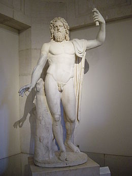
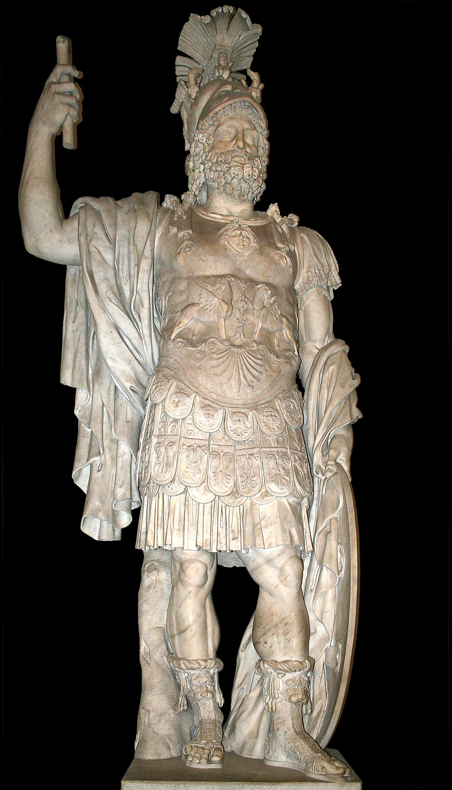
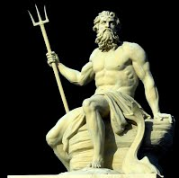
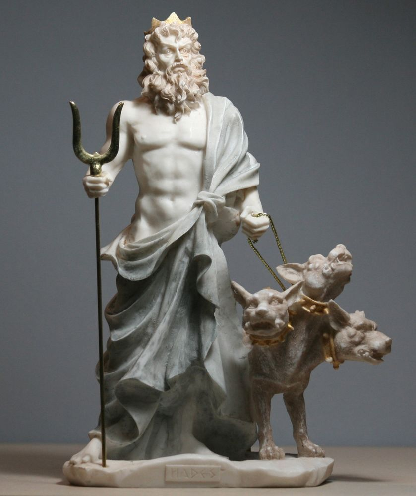
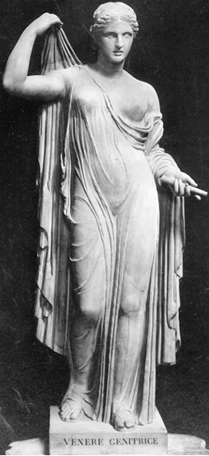

De Romeinen hadden veel goden. Bijna allemaal zijn ze hetzelfde als die van de Grieken alleen hebben de Romeinen ze een andere naam gegeven. Ik ga het hebben over:
Jupiter (oppergod)
Romeinse versie van: Zeus
god van de hemel en onweer
kenmerk: Jupiter heeft altijd een bliksemschicht bij zich.
Mars

Romeinse versie van: Ares
god van de oorlog
kenmerk: de maand maart en de planeet Mars zijn naar hem vernoemd.
Neptunus

Romeinse versie van: Poseidon
god van de zee
kenmerk: hij heeft altijd een drietand bij zich.
Pluto

Romeinse versie van: Hades
god van de onderwereld
kenmerk: de planeet Pluto is neer hem vernoemd.
Venus

Romeinse versie van: Aphrodite
god van de liefde, tuinen en wijngaarden
kenmerk: de planeet Venus is naar haar vernoemd.